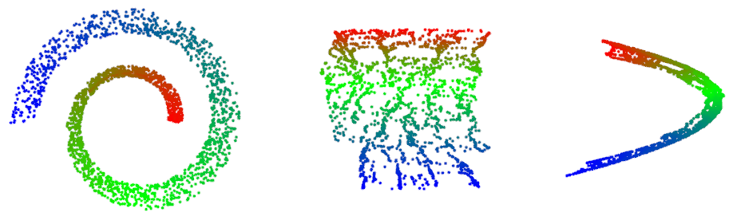
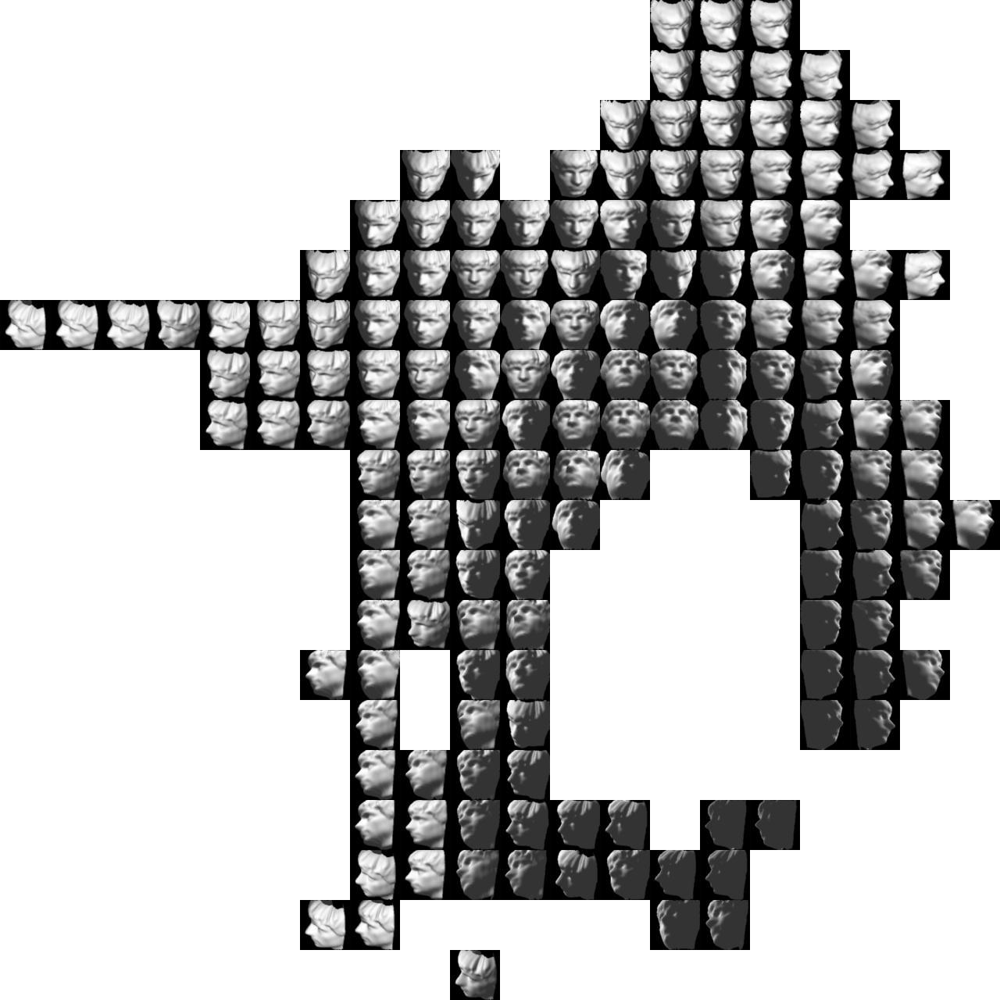
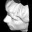

In 2008, a team of researcher from Google published this paper
on Large-Scale
Manifold Learning. It was followed in 2010 by an Orkut application that
finds a path on the "Face Manifold",
described on the GoogleResearch blog.
Imperial teachers thought it was a cool subject and gave it as a group project
for 5 students, between january 2011 and mid-March 2011.
We decided to work on a 1M face database, homemade, mummy was a Perl crawler
based on the CPAN
module WWW::Google::Images,
and daddy was the OpenCV-2.2 face detector. Also we were given access to
monster machines with 64Gb of RAM and 24 CPUs, wich allowed us to slurp 15G of
images into memory in 2 minutes, using the
lovely TBB library.
As stated on Google's blog, the two keys to large-scale
Manifold Learning are Spilltrees for approximate nearest neighbours, and the
Nystrom method for approximate Isomap. We used the OpenCV-2.2 spilltrees,
applying this patch to make them
thread-safe (otherwise they were using one single cache for the whole tree, as
well as storing temporary results in the leaves), and therefore usable with TBB.
We wrote the Nystrom-Isomap code
using OpenCV for the linear Algebra.
So we rolled up our sleeves, typed for long nights, then we had nice results for
swissroll data.

We went on, and tested on some test data available in the Stanford Isomap
Matlab Toolbox. This begins to look like a face manifold:


At that point, everything works smoothly, we are
happy. Let's try it with the 13K images of
the Labeled Faces in the Wild
database.
If you wish to see nice animations we produced, you can have a look
at this page.
Also, not to do things half-way, we wrapped up the resulting application with a
fancy web interface, presented
in this video:
Going further...
The strength of a pipeline of scripts is that you can
easily replace a brick by another one.
Here is a rendering of the Manifold using the "Landmark Isomap" from
the Matlab
Toolbox for Dimensionality Reduction:
{kind=link}
{kind=link}
{kind=link}
{kind=link}